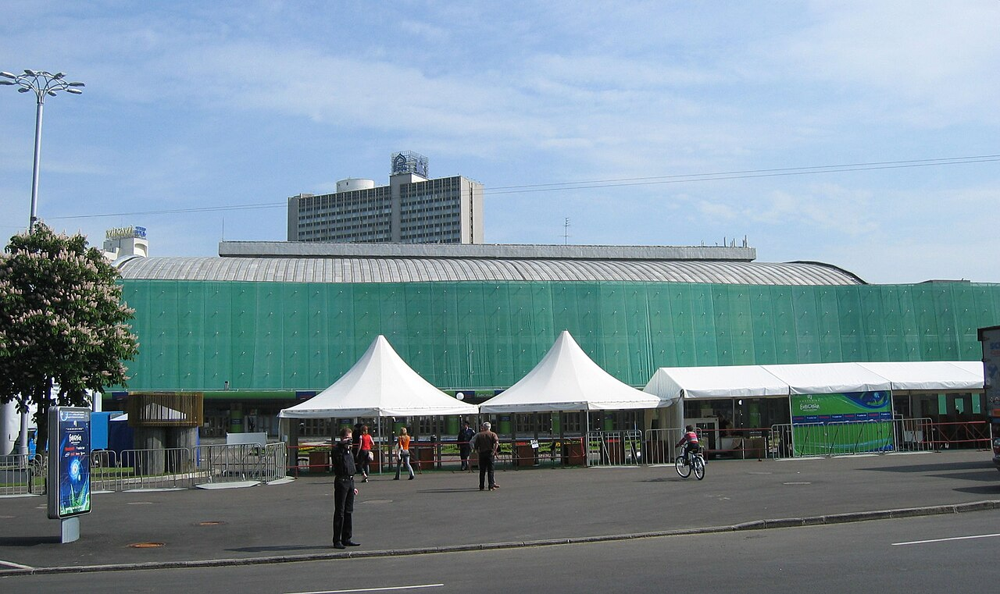
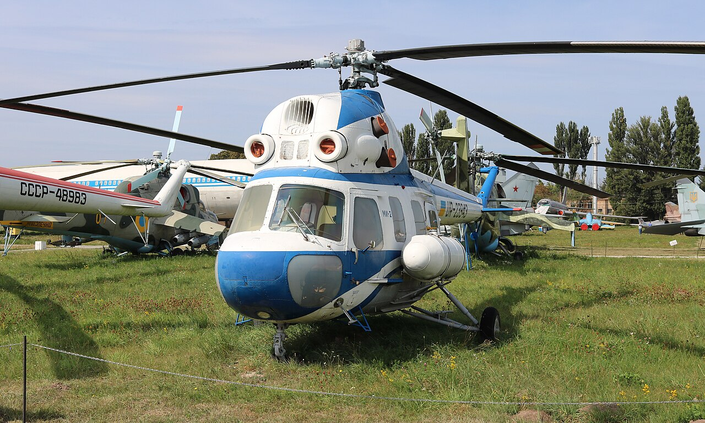
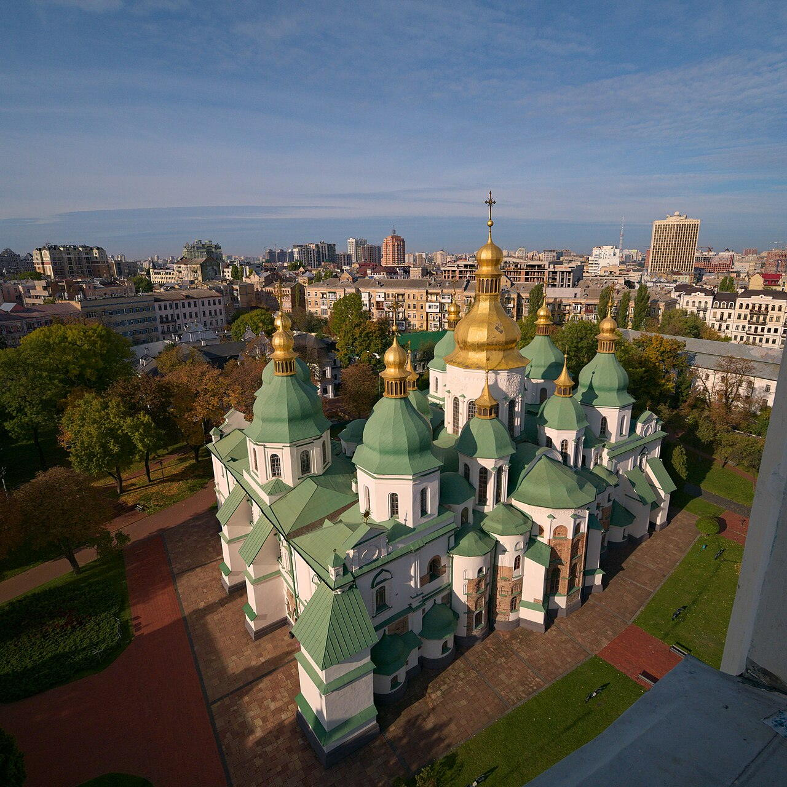

Historical and reference coats of arms


Kyiv
Guide. Places in this edition: 37.
OTIUM is the practice of deliberate leisure. In the classical sense, otium is not escape from work but time when attention returns to memory, landscape, and thought — without a utilitarian deadline.
We shape routes for lingering, not for checklist tourism. The goal is presence in a place rather than consumption of sights.
OTIUM is not a tour operator. It is an invitation to walk, pause, and leave a route unfinished if the light on a façade deserves another minute.
Historical and reference coats of arms
Guide. Places in this edition: 37.
Kyiv is the capital of Ukraine and one of Eastern Europe’s oldest continuously inhabited cities, set on the Dnieper hills.
As a centre of Kyivan Rus, later Polish-Lithuanian, imperial, Soviet, and independent eras, it combines monastic cliffs, boulevards, and modern quarters. Its history is inseparable from the wider region’s faith, trade, and statecraft.
Kyiv endured the Mongol sack, Polish-Lithuanian rule, imperial administration, and the Soviet era as Ukraine’s capital. Independence from 1991 and events after 2014 reframed its political role as a European capital on the Dnieper.

Andriyivsky Descent is a historic and cultural landmark in Kyiv.

Andriyivskyy Descent — landmark in Kyiv.
Ar-Rahma.jpg

Ar-Rahma.jpg — landmark in Kyiv.

Bessarabsky Market — landmark in Kyiv.

Contract House — landmark in Kyiv.

Glass Bridge Kyiv — landmark in Kyiv.

Golden Gate — museum in Kyiv, Ukraine.

Golden Gate is a historic and cultural landmark in Kyiv.

Great Lavra Bell Tower — landmark in Kyiv.

House with Chimaeras (Ukrainian: Будинок з химерами, romanized: Budynok z khymeramy) or Horodetsky House (named for Władysław Horodecki) is an Art Nouveau building located in the historic Lypky neighborhood of Kyiv, the capital of Ukraine. Situated across the street from the President of Ukraine's office at No. 10, Bankova Street, the building has been used as a presidential residence for official and diplomatic ceremonies since 2005.

Hryshko National Botanical Garden (Ukrainian: Національний ботанічний сад імені М. Гришка, Natsionalnyi botanichnyi sad im. Hryshka) is located in Kyiv, the capital of Ukraine.

Maidan Nezalezhnosti — main square of Kyiv, Ukraine.
Kyiv 2019.jpg

Kyiv 2019.jpg — landmark in Kyiv.
Kyiv Palace of Sports.jpg

Kyiv Palace of Sports.jpg — landmark in Kyiv.

The Kyiv Pechersk Lavra or Kyievo-Pecherska Lavra (Ukrainian: Києво-Печерська лавра), also known as the Kyiv Monastery of the Caves, is a historic lavra or large monastery of Eastern Christianity that gave its name to the Pecherskyi District where it is located in Kyiv. Since its foundation as the cave monastery in 1051, the Lavra has been a preeminent center of Eastern Christianity in Eastern Europe. Etymology and other names Ukrainian: печера, romanized: pechera means lit.

Mariinsky Palace — landmark in Kyiv.

Mariinsky Park — landmark in Kyiv.
Mi-2 Kyiv Museum 2018 G1.jpg

Mi-2 Kyiv Museum 2018 G1.jpg — landmark in Kyiv.
Mosque engraving.jpg

Mosque engraving.jpg — landmark in Kyiv.

Motherland Monument — landmark in Kyiv.

The Mystetskyi Arsenal National Art and Culture Museum Complex, also known as Mystetskyi Arsenal (Ukrainian: Мистецький арсенал, lit. 'Artistic arsenal') is Ukraine's flagship public cultural institution, a museum and art exhibition complex located at 10–12 Lavrska Street, in Kyiv, Ukraine. The total exhibition area of the historic venue is 60,000 m2, one of the largest in Europe.

The National Art Museum of Ukraine (Ukrainian: Національний художній музей України [nɐts⁽ʲ⁾ioˈnɑlʲnɪj xʊˈdɔʒn⁽ʲ⁾ij mʊˈzɛj ʊkrɐˈjinɪ], romanized: Natsionalnyi khudozhnii muzei Ukrainy, stylized NAMU) is a museum dedicated to Ukrainian art in Kyiv, Ukraine. History The National Art Museum of Ukraine, which was the first museum in Kyiv to be freely open to the public, was founded at the end of the 19th century by the efforts of Ukrainian intellectuals.

National Opera of Ukraine — landmark in Kyiv.

One Street Museum — landmark in Kyiv.

Pechersk government quarter — landmark in Kyiv.

Podil district — landmark in Kyiv.

Saint Sophia Cathedral in Kyiv is an 11th-century Byzantine monument and UNESCO World Heritage site, famed for its mosaics, frescoes, and central role in Kyivan Rus heritage.
Saint Sophia Cathedral Kiev.jpg

Saint Sophia Cathedral Kiev.jpg — landmark in Kyiv.

St Alexander Roman Catholic church is a historic and cultural landmark in Kyiv.

St Andrews Church Kyiv — landmark in Kyiv.

St Boris and Gleb Monastery is a historic and cultural landmark in Kyiv.

St Cyrils Monastery — landmark in Kyiv.

St Michael Golden Domed Monastery — landmark in Kyiv.

St Michael Monastery is a historic and cultural landmark in Kyiv.

St Nicholas Cathedral — landmark in Kyiv.

St Volodymyr Cathedral — landmark in Kyiv.
Вільнянськ3.jpg

Вільнянськ3.jpg — landmark in Kyiv.